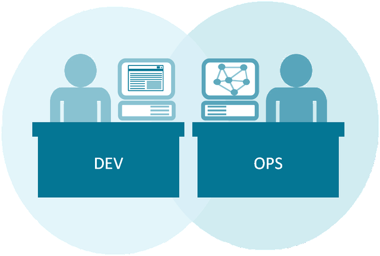
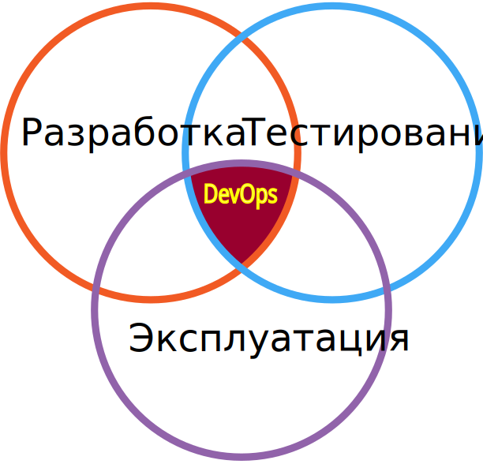

DevOps engineer (Инженер по развитию операций) 
DevOps (development + operations) — это зародившаяся в 2009 году методология, нацеленная на взаимодействие программистов и системных администраторов для увеличения частоты выпуска релизов. Это специалист, который работает на стыке этих двух должностей и занимается автоматизацией жизненного цикла приложения (включая проектирование, разработку, тестирование, развертывание, поддержку и мониторинг).
Главная задачам DevOps инженера — максимально увеличить предсказуемость, эффективность и безопасность разработки ПО. Если рассматривать полный жизненный цикл ПО, то на этапе оценки DevOps специалисты получают первичную информацию о необходимости нового кодирования и внесения изменений в ИТ-инфраструктуру. На этапе проектирования — определяют требования к инфраструктуре. На этапе разработки и тестирования — занимаются развертыванием продукта, а также поддержкой средств для разработки, интеграционным и нагрузочным тестированием ПО для проверки готовности операционной среды.
...нужны люди, которые будут разбираться в коде на достаточном уровне, чтобы вычищать за разработчиками мусор из конфигов, дописывать костыли по необходимости, связывать сервисы воедино...
Основная часть работы DevOps инженера приходится на этап выпуска релиза — поставки продукта заказчику. В центре внимания находится производительность всех потоков процесса доставки. Такой специалист следит за тем, чтобы известные баги никогда не передавались на следующий этап работ, никогда не развивалась локальная оптимизация, приводящая к созданию глобальной деградации.
- Развертывание поставленного разработчиками релиза в производстве;
- Интеграция и углубление процессов разработки в поставку;
- Стандартизация окружения разработки;
- Настройка инфраструктуры на особенности разрабатываемого ПО;
- Подготовка продуктивной среды к частым внесениям изменений;
- Обнаружение и исправление проблем;
- Автоматизация процессов.
В обязанности DevOps engineer входит:
В ходе работы DevOps engineer использует инструменты, автоматизирующие выделение системных ресурсов и управление. К таким инструментам относятся различные средства управления конфигурациями, виртуализации на разных уровнях, автоматизации операционных процессов, облачные инструменты выделения ресурсов по требованию.
Главное достоинство профессии DevOps engineer — рост интереса компаний к концепции DevOps. По данным EMA, около 30% компаний уже реализовали или планируют реализовать DevOps в ближайшее время. То есть спрос есть — без работы хороший специалист не останется. Самих DevOps специалистов привлекает то, что в работе они имеют 100% загрузку, в отличие от профессии системного администратора.
Большинство DevOps инженеров — это системные администраторы, выучившие инструменты программирования, или же разработчики, разобравшиеся с тонкостями процессов operations. Желательно иметь базовое техническое образование, разбираться в вопросах, связанных с системным администрированием и автоматизацией различных задач.
Основными задачами DevOps являются автоматизация процессов разработки (выкатить ветку из git для тестирования, выкатить определенную версию приложения в production, автоматизация управления инфраструктурой), мониторинг состояния приложения, по возможности автоматическое восстановление приложения и соответствующие оповещения членам команды
- Аналитический склад ума;
- Стрессоустойчивость;
- Умение не сдаваться даже в безвыходных ситуациях.
Необходимые качества:
DevOps предполагает передачу всех паролей и доступов разработчикам: Многим могло показаться, что приверженцы DevOps пропагандирует мир, где разработчики и системные администраторы «помешались» на производительности систем. Это вовсе не соответствует действительности. На самом деле сущечтвует более тесное взаимодействие между командами. В большинстве компаний до сих пор есть команда разработчиков (development) и команда операционных специалистов (operations). Devops – это специалисты и процессы, которые помогают возводить мосты между этими 2-мя командами для более эффективного сотрудничества. Некоторые разработчики могут получить доступ в продуктив в целях поддержки ПО. Если же Вы не уверенны в оправданности такого решения, Вам совсем не обязательно предоставлять разработчикам пароли. Вы можете использовать sudoers file – делегировать те или иные привилегированные ресурсы пользователям с ведением протокола работы. Это поможет разработчикам качественно выполнять свою работу, удовлетворяя Ваши потребности: контроль и аудит логов, отслеживание процессов серверов. Любой компании предстоит найти оптимальный баланс: дать возможность разработчикам делать свою работу, но таким способом, который будет наименее рисковым и разрушительным для всех вовлеченных участников. Такие инструменты как: «sudo» и «friends» – хорошо известны и надежны. Этот инструментарий позволяет определить круг доверенных лиц, которые смогут совершать определенный перечень действий. Например, перезапуск веб-сервера во время развертывания, при этом, не имея прав перезапустить его при других обстоятельствах. Обе команды: команда разработчиков (Development) + команда системных администраторов (Operations) сообща несут ответственность за конечный результат. Этот факт изменил ситуацию, в которой лишь системные администраторы отвечали за все сбои и простои системы. Методология DevOps гласит, что обе команды являются заинтересованными сторонами, а значит, совместно отвечают за стабильность, доступность и производительность систем.